Jilin University / Changchun University / China University of Mining and Technology2025#008서베이·산업동향리뷰논문
핵심기술 기반 토공 장비 자동화의 발전과 과제
Advancements and Challenges in Earthmoving Equipment Automation Using Core Technologies
Jiyu Feng, Wei Chen, Changyi Liu, Xinhui Liu, Bingwei Cao, Feixiang Xu · Automation in Construction 179 (2025) 106472
한줄 요약 — 계량서지 분석과 체계적 리뷰를 결합해 휠로더·굴착기·LHD의 6단계 단주기 적재를 네 핵심기술로 재구성하고, 데이터-물리 하이브리드 모델·디지털 트윈·엣지-클라우드·표준 모듈·인간-기계 협업이 분절된 자동화 연구를 실용적 전체 시스템으로 잇는 방향이라고 제시한 2025년 종합 리뷰다.
1.연구 배경 및 동기
30년의 하위기술 발전에도 완전 자율 토공이 실현되지 않은 이유
휠로더·굴착기·LHD는 광산, 건설현장, 철도 화물장과 농업시설에서 반복적인 굴착·적재·단거리 운반을 수행한다. 작업은 단조롭고 먼지·소음·진동이 크며 운전자 피로가 판단력과 안전에 영향을 준다. 승용차 자율주행의 진전이 관련 센서와 알고리즘을 끌어올렸지만, 토공 장비는 도로 주행만이 아니라 변형되는 재료를 버킷으로 파고 운반하며 다른 장비에 하역해야 한다. 복잡 매질, 비정형 지형, 가변 환경과 장비-재료 상호작용이 추가되므로 상용 완전 자율 시스템은 여전히 드물다.
기존 리뷰는 휠로더 적재 단계, 딥러닝 비전, 군사 토공로봇, 굴착기 원격조작, 굴착기의 인지-계획-행동 등 특정 플랫폼이나 기술에 초점을 맞췄다. 파일 표면 재구성, 굴착난이도 평가, 적재량 추정, 하역점 조정과 위험평가가 한 단주기 작업 안에서 어떻게 연결되는지는 충분히 다뤄지지 않았다. 반대로 개별 논문들은 궤적, 경로, 버킷 충전율처럼 한 서브시스템의 성능을 개선하지만 전체 사이클 수준의 효과와 실패 전파는 보여주기 어렵다.
본 리뷰는 휠로더 단주기 작업을 여섯 단계로 나눈 뒤 이를 환경인식, 경로계획 및 추종, 자율 적재·하역, 안전·위험평가의 네 기술축으로 묶는다. 1990~2025년 문헌을 계량서지 분석해 연구의 성장과 클러스터를 찾고, 대표 문헌을 체계적으로 읽어 기술별 진전과 공백을 설명한다. 다만 고정밀 지도·측위, 전자 아키텍처·컴퓨팅 플랫폼·사이버보안, 표준·규정은 명시적으로 범위 밖에 둔다.
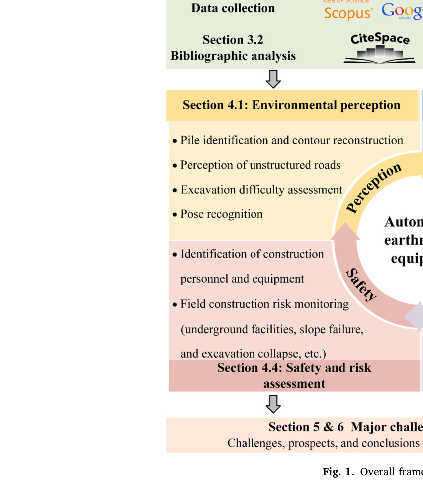
원문 Figure 1 · PDF p.3 — Fig. 1. Overall framework of this paper.
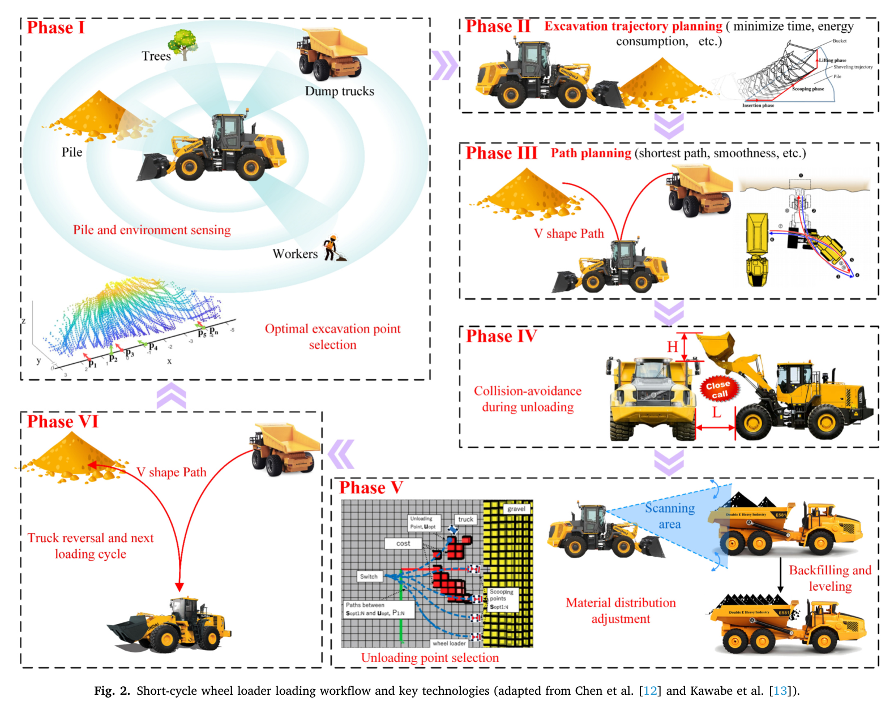
원문 Figure 2 · PDF p.4 — Fig. 2. Short-cycle wheel loader loading workflow and key technologies (adapted from Chen et al. [12] and Kawabe et al. [13]).
선행 연구의 한계
선행 리뷰는 특정 장비, 적재 단계, 비전 또는 원격조작에 집중해 단주기 적재 전체 흐름을 함께 비교하지 못했다.
환경인식·계획·굴착·안전 연구가 독립 서브시스템으로 최적화돼 상호 의존성과 전체 생산성 효과가 부족했다.
파일 재구성, 굴착난이도, 하역점과 재료분포 같은 실무 세부기술이 기존 종합 리뷰에서 간과됐다.
비전·LiDAR·고유감각의 단일 센서 접근은 조명, 먼지, 진동, 가림, 혼합 재료에 취약했다.
논문별 지표와 시험환경이 이질적이어서 기술 간 정량 순위를 직접 매기기 어려웠다.
이 연구의 기여
Google Scholar, Scopus, Web of Science, IEEE Xplore에서 596편을 검색하고 PRISMA 절차와 인용 추적으로 최종 142편을 구성했다.
단주기 적재의 여섯 단계를 네 핵심기술 축과 연결해 부분 연구가 전체 작업흐름에서 맡는 역할을 명확히 했다.
파일 윤곽 재구성, 굴착난이도, 굴착점·궤적, 적재량·체적, 하역점, 인원·장비와 지하 위험 탐지를 세부 분류했다.
이종센서 융합, 재료별 전략, 범용 안전체계, 대규모 데이터셋을 핵심 공백으로, 디지털 트윈·엣지-클라우드·표준화·인간 협업을 발전 방향으로 제시했다.
2.방법론 및 시스템 구성
연구는 정량적 계량서지와 정성적 체계 리뷰를 결합한다. 검색 대상은 버킷을 주 작업도구로 쓰는 휠로더, LHD, 굴착기와 기타 토공장비다. 주요 장비명·자동화·건설기계 키워드에 비정형 도로, 파일 식별, 굴착난이도, 자세인식, 경로계획, 굴착점·궤적, 적재량·체적, 하역점, 작업자·장비 인식, 안전과 위험 모니터링 용어를 AND/OR로 조합했다. 기간은 1990년부터 2025년 7월까지, 언어는 영어, 출처는 동료평가 저널과 국제학회로 제한했다.
초기 596편에서 중복 32편과 비영어·명백한 비관련 8편을 제외해 556편을 제목·초록 심사했고 298편을 배제했다. 258편의 서론·방법·결론·핵심 그림과 표를 전문 검토해 144편을 제외하고 114편을 남겼다. 이들의 전후방 인용 추적으로 47편을 추가 발굴해 동일 기준을 통과한 28편을 더해 142편을 확정했다. CiteSpace로 발행연도, 출처, 국가·기관, 인용관계와 최소 3회 출현 키워드를 분석한 뒤 네 클러스터별 대표 문헌을 심층 검토했다.
처리 파이프라인
1
단주기 적재 문제 분해
파일·트럭 위치 파악과 접근, 재료별 굴착·적재, 트럭까지 후퇴 경로, 트럭 접근과 재료분포 평가, 하역·분포 조정, 다음 사이클 복귀의 여섯 단계를 정의한다.
2
검색 범위와 쿼리 정의
네 데이터베이스에서 장비명과 핵심기술 키워드를 결합하고 1990~2025년 영어 동료평가 저널·학회 논문으로 범위를 제한한다.
CiteSpace와 텍스트 마이닝으로 연도별 성장, 주요 출판원, 국가·기관 분포, 인용관계와 키워드 공출현을 분석한다.
5
네 기술 클러스터 형성
최소 3회 출현한 39개 공출현 키워드에서 환경인식, 경로계획·추종, 자율 적하역, 안전·위험평가의 네 군집을 식별한다.
6
기술별 체계 리뷰
각 군집에서 센서·알고리즘·검증 방식·장점·한계를 비교하고, 여섯 작업단계에서 필요한 입력과 출력을 연결한다.
7
공백과 미래 방향 종합
개별 기술 한계와 현장 사례를 전체 사이클 관점에서 다시 해석해 네 실무 과제와 디지털 트윈, 엣지-클라우드, 표준화, 인간 협업 방향을 제시한다.
원문 수식과 의미
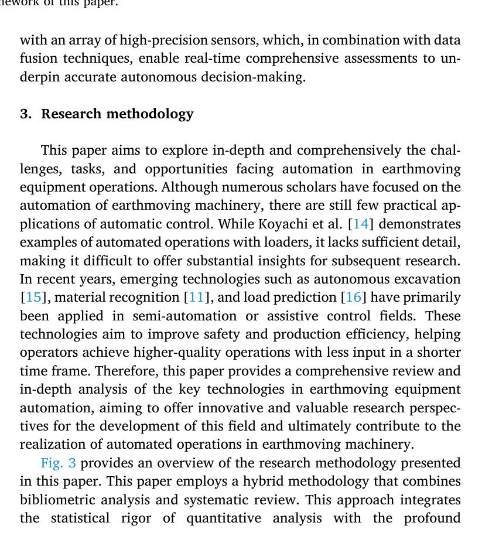
원문 Figure 3 · PDF p.3 — Fig. 3 provides an overview of the research methodology presented in this paper. This paper employs a hybrid methodology that combines bibliometric analysis and systematic review. This approach integrates the statistical rigor of quantitative analysis with the profound
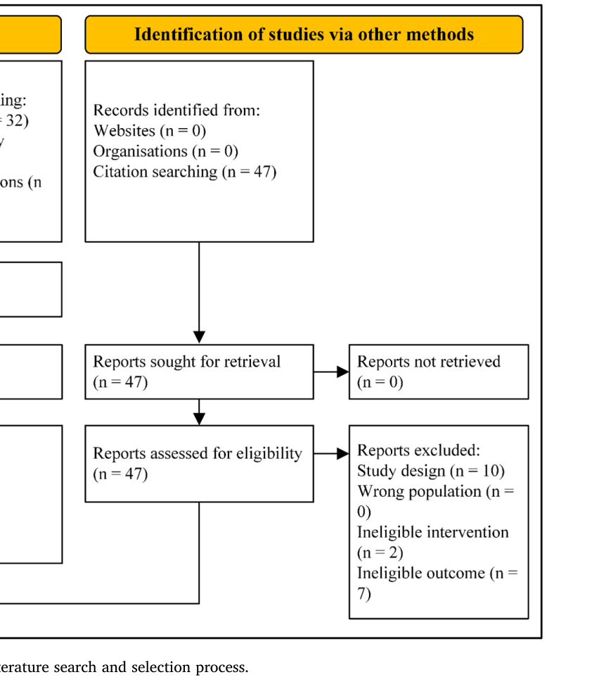
원문 Figure 4 · PDF p.6 — Fig. 4. PRISMA flow diagram of literature search and selection process.
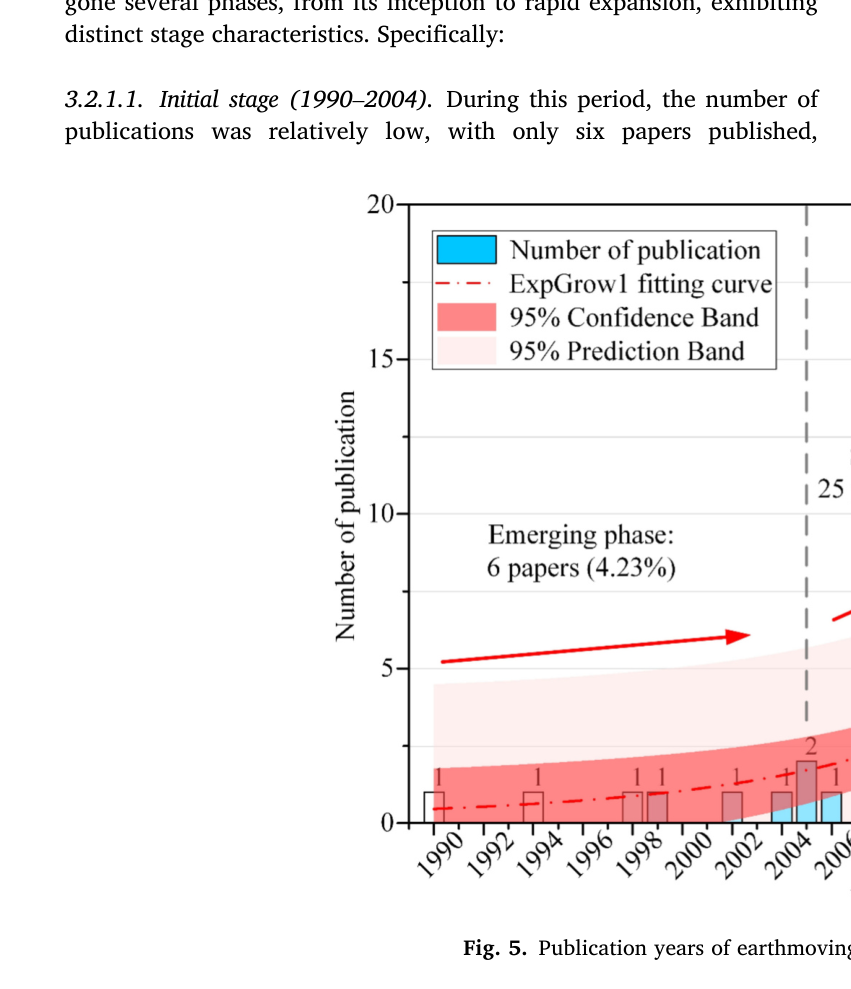
원문 Figure 5 · PDF p.6 — Fig. 5. Publication years of earthmoving equipment automation-related works.
원문 Figure 8 · PDF p.9 — Fig. 8. Research clusters with keywords.
3.핵심 기술
환경인식: 비정형 도로에서 재료·장비 자세까지
환경인식은 카메라, LiDAR, 밀리미터파 레이더, RTK, IMU와 장비 내부 압력·변위 센서를 이용해 주행 가능 영역, 파일의 위치·형상·재료, 굴착난이도, 덤프트럭과 장비 자세를 추정한다. 비전은 정보량과 비용에서 유리하지만 조명·먼지·날씨와 데이터셋 구축비용에 취약하고, LiDAR는 깊이와 조명 강건성을 제공하지만 점군 처리와 실시간 정합이 필요하다.
파일 윤곽은 스테레오 삼각측량, LiDAR 컬럼 모델, 3D 점군 프로파일, 스테레오-LiDAR 융합으로 재구성한다. 표면 재료만 보는 비전으로는 매설 암석과 혼합 재료를 알기 어려워 유압 압력·가속도·에너지 같은 고유감각과의 결합이 필요하다. 물리모델은 해석 가능하지만 복잡한 접촉을 완전히 표현하기 어렵고, 데이터 모델은 대규모 학습자료와 도메인 일반화가 문제이므로 데이터-물리 하이브리드가 양쪽 오차를 보완하는 유망 접근으로 평가된다.
비정형 도로는 경계·형상·노면 외관이 불규칙해 도시도로의 고정 특징을 그대로 쓰기 어렵다.
단일 재료 분류기는 성질이 비슷하거나 혼합된 파일에서 오분류 위험이 크다.
RTK-IMU 융합은 절대 위치와 단기 자세 보완을 제공하지만 반사·음영과 외부 기준국 의존성이 남는다.
멀티센서 융합은 해상도·좌표·시간 정렬, 품질 불균형과 전송지연을 동시에 해결해야 한다.
경로계획과 추종: 짧은 사이클 안의 전역·지역 의사결정
경로계획은 파일 접근, 파일에서 덤프트럭으로 이동, 복귀 단계의 시간·연료·안전을 좌우한다. 전역계획은 파일·트럭·장비 위치가 주어진 지도에서 미분기하 곡선, Dijkstra·A*, RRT 계열, 진화 알고리즘, 수치최적화와 강화학습으로 충돌 없는 경로를 찾는다. 지역계획은 장비 상태와 새 장애물을 반영해 경로를 실시간 수정한다.
경로추종은 관절형 차체의 비선형성과 종·횡 운동 결합, 미끄럼과 지면 불규칙성을 다뤄야 한다. PID·퍼지·LQR부터 MPC·적응 MPC·NMPC까지 사용되며, 실제 산업 사례는 폐쇄된 대형 현장에서 높은 추종 정밀도를 보이지만 다양한 장비·토질·혼재 작업자로 일반화된 공통 벤치마크는 부족하다.
최단거리만이 아니라 곡률·안정성·에너지·사이클 시간과 장비 기구학을 함께 최적화해야 한다.
샘플링·진화·RL은 복잡 공간에 유연하지만 계산시간과 재현성, 훈련범위 밖 안전성이 문제다.
MPC는 제약과 외란을 온라인 처리하지만 정확한 장비 모델과 계산자원이 필요하다.
자율 적재·하역: 굴착점, 궤적, 적재량, 덤핑 분포의 폐루프
적재 자동화는 파일 표면에서 어디를 파고 어떤 궤적을 실행할지, 버킷이 얼마나 찼는지, 트럭 어디에 내려야 하는지를 연속 결정한다. 굴착점은 컬럼 모델, 버킷 좌·중·우 분할, 이차곡면 피팅, 거리·기울기·무게중심·3D 구성 점수와 강화학습으로 평가된다. 궤적은 숙련자 경험, 원호·다항식, GA·PSO·SQP 최적화, LSTM·RL과 하이브리드 방법으로 생성된다.
적재량은 유압·운동학 모델, 특징맵, 신경망, 스테레오 비전, 2D 검출, LiDAR 높이 격자로 추정한다. 하역은 트럭 적재함 자세뿐 아니라 기존 재료의 공간 분포와 낙하·충격을 고려해야 한다. 리뷰는 하위 모듈별 높은 정확도보다 인식 오류가 굴착점·궤적·충전량·하역점으로 전파되는 전체 폐루프 검증이 부족하다는 점을 더 중요한 공백으로 본다.
혼합·습윤·대형 암석 재료에는 하나의 고정 굴착전략이 충분하지 않다.
기하 궤적은 실행 가능성이 명확하지만 재료 적응성이 약하고, 학습 궤적은 일반화·안전 설명이 어렵다.
적재량 추정은 작업 중 동적으로 수행해야 정지 측정에 따른 생산성 손실을 피할 수 있다.
굴착과 하역을 분리하지 않고 버킷 충전율과 트럭 재료분포를 다음 사이클 계획에 환류해야 한다.
안전·위험평가: 사람 충돌을 넘어 지하·사면 위험까지
안전기술은 RFID, UWB, GPS, Bluetooth, Wi-Fi, 레이더, 카메라와 LiDAR로 인원과 장비를 식별하고 안전영역 침입을 경고한다. 각 센서는 다중경로, 인프라, 조명, 거리, 개인정보와 유지비 한계가 있어 비전-무선-레이더 융합이 필요하다. 그러나 리뷰는 인원 근접경고만으로는 토공 작업의 안전을 포괄하지 못한다고 지적한다.
하향 굴착은 매설 전력·수도·통신 시설을 손상할 수 있고, 광산·절개지는 산사태와 붕괴를 일으킬 수 있다. GPR, 자력계, GPS 결합, 지상 SAR와 위성 레이더가 사용되지만 금속·비금속 대상, 탐지 깊이, 날씨와 설치성의 상충이 존재한다. 따라서 사람, 환경, 공사 위험을 모듈로 결합한 범용 안전·위험평가 체계가 필요하다.
센서별 경보를 하나의 위험상태와 장비 정지·회피 명령으로 연결하는 표준 인터페이스가 부족하다.
지하 유틸리티 도면은 불완전할 수 있어 사전 지도만으로 안전을 보장할 수 없다.
광산·터널·고사면 등 현장별 위험모듈을 교체할 수 있는 확장형 안전구조가 필요하다.
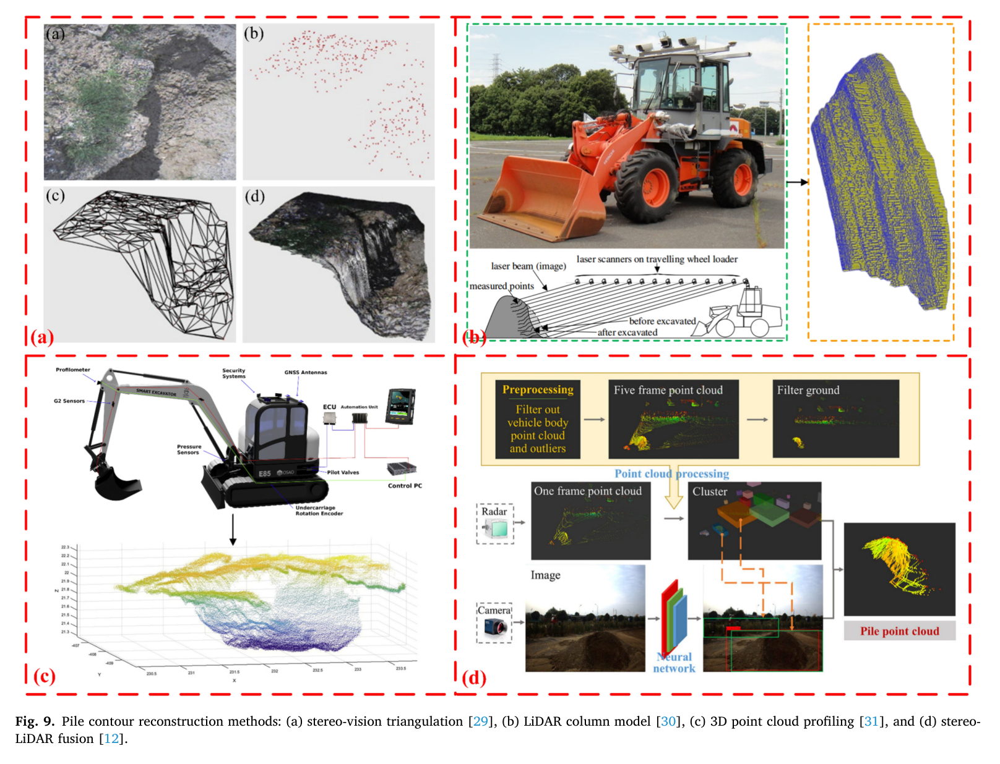
원문 Figure 9 · PDF p.10 — Fig. 9. Pile contour reconstruction methods: (a) stereo-vision triangulation [29], (b) LiDAR column model [30], (c) 3D point cloud profiling [31], and (d) stereo- LiDAR fusion [12].
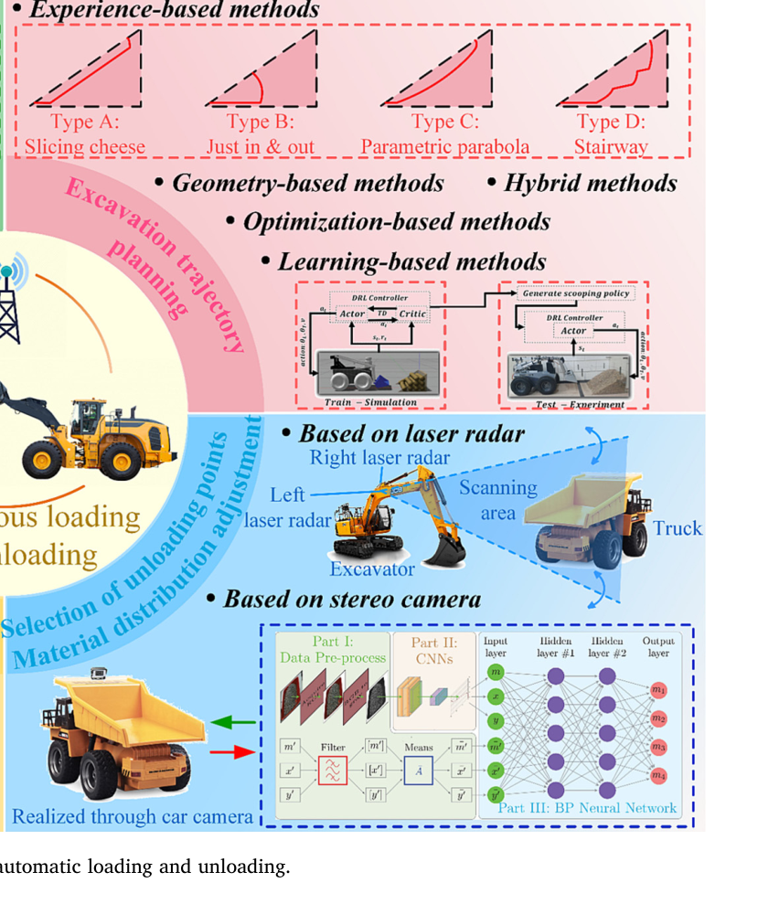
원문 Figure 10 · PDF p.15 — Fig. 10. Summary diagram of automatic loading and unloading.
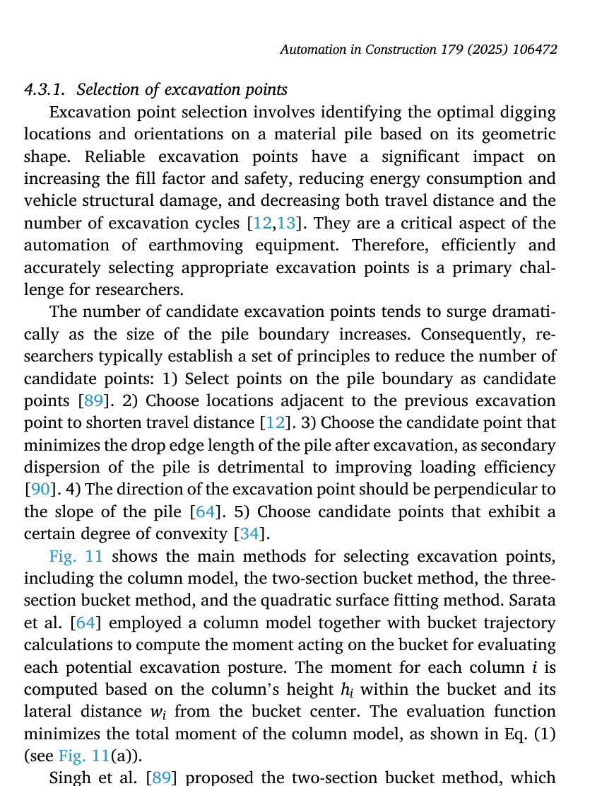
원문 Figure 11 · PDF p.15 — Fig. 11 shows the main methods for selecting excavation points, including the column model, the two-section bucket method, the three- section bucket method, and the quadratic surface fitting method. Sarata et al. [64] employed a column model together with bucket trajectory calculations to compute the moment acting on the bucket for evaluating each potential excavation posture. The moment for each column i is computed based on the column’s height hi within the bucket and its lateral distance wi from the bucket center. The evaluation function minimizes the total moment of the column model, as shown in Eq. (1) (see Fig. 11(a)).
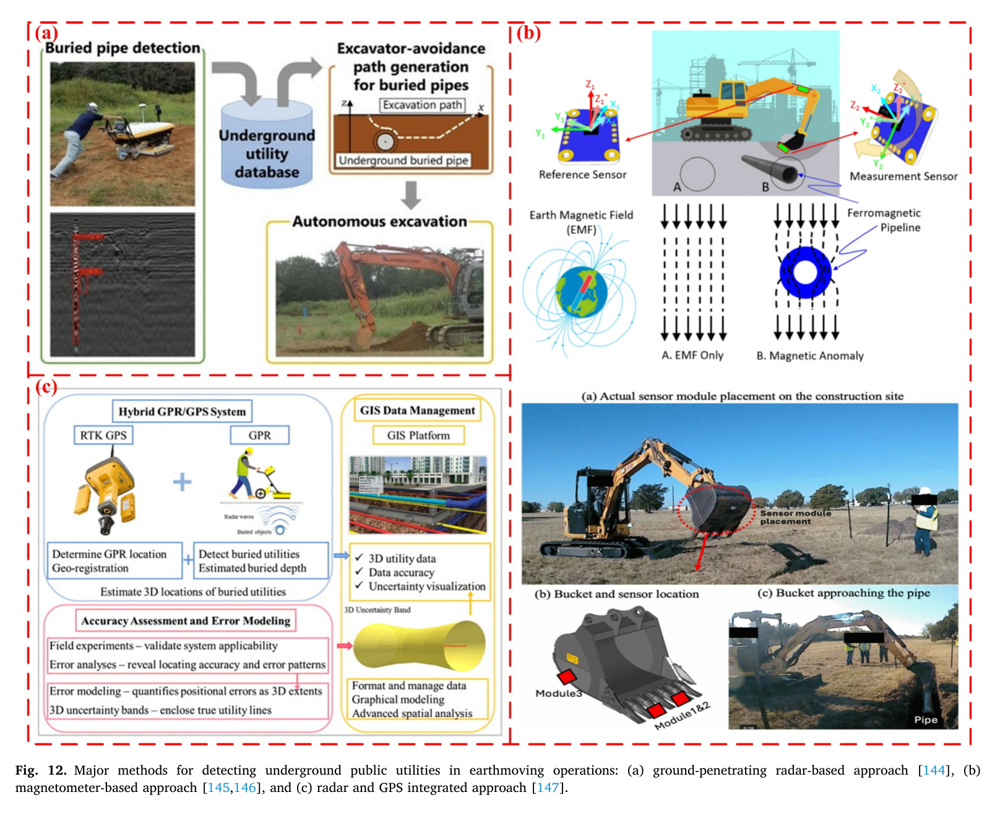
원문 Figure 12 · PDF p.21 — Fig. 12. Major methods for detecting underground public utilities in earthmoving operations: (a) ground-penetrating radar-based approach [144], (b) magnetometer-based approach [145,146], and (c) radar and GPS integrated approach [147].
4.실험 결과
실험 환경·장비·데이터
독립 장비 실험이 아니라 1990~2025년 영어 동료평가 저널·학회 문헌을 대상으로 한 계량서지 분석과 체계적 리뷰다.
대상 플랫폼은 휠로더, LHD, 굴착기와 버킷을 주 작업도구로 쓰는 기타 토공장비다.
데이터베이스는 Google Scholar, Scopus, Web of Science, IEEE Xplore이며 최종 분석문헌은 142편이다.
CiteSpace로 발행연도, 출판원, 국가·기관, 인용관계와 키워드 공출현을 분석했다.
실험 프로토콜
596편 검색 뒤 중복·언어·명백한 비관련 자료를 제거하고 제목·초록을 선별했다.
258편의 전문에서 서론·방법·결론·핵심 그림과 표를 검토해 114편을 포함했다.
전후방 인용 추적으로 추가한 47편 중 동일 기준을 만족한 28편을 더했다.
최소 3회 키워드 출현 기준으로 39개 공출현 키워드를 네 연구 클러스터로 묶었다.
클러스터별 대표 문헌의 센서·알고리즘·검증·장단점을 여섯 단계 단주기 작업과 연결했다.
비교 기준
기존 다섯 종의 선행 리뷰와 본 리뷰의 플랫폼·기술 범위
비전·LiDAR·고유감각 단일센서와 멀티센서 융합
물리 기반, 데이터 기반, 데이터-물리 하이브리드 모델
기하·최적화·학습·하이브리드 굴착 및 경로계획
1990~2004, 2004~2014, 2014~2025의 연구 성장 단계
평가 지표
검색·제외·포함 문헌 수
연도 구간별 논문 수와 비율
출판원·국가별 논문 수와 인용 수
공출현 키워드 수와 클러스터 수
리뷰가 인용한 현장·상용 사례의 보고 성능
핵심 결과 해석
142편의 분포는 초기 1990~2004년 6편, 2004~2014년 25편, 2014~2025년 111편으로 급성장했다. 최소 세 번 등장한 39개 키워드는 환경인식, 경로계획·추종, 자율 적하역, 안전·위험평가의 네 군집을 만들었다. 중국이 46편으로 32.39%를 차지했고 미국 13.38%, 일본과 캐나다 각 9.15%, 한국 7.04% 순이었다. 이는 연구량이 빠르게 늘었음을 보여주지만, 특정 국가·영어권 출판과 일부 기관에 집중된 표본이라는 한계도 함께 드러낸다.
기술 종합의 결론은 개별 센서·계획기·제어기의 성능 향상만으로 완전 자율화가 달성되지 않는다는 것이다. 실용화를 가로막는 네 문제는 이종센서 데이터의 해상도·정렬·품질·지연, 혼합·습윤·대형 암석에 대한 재료인식과 굴착전략 부족, 인원·지하·사면 위험을 아우르는 범용 안전체계 부재, 굴착장비 전용 대규모 데이터셋 부족이다. 미래에는 디지털 트윈으로 장비·재료·현장을 실시간 동기화하고 합성데이터를 만들며, 엣지가 즉시 처리하고 클라우드가 장기 모델을 갱신하는 구조, 브랜드 간 표준·모듈, 비상·예외를 사람이 감독하는 협업형 운용이 필요하다.
정량 결과
평가 항목
정량 결과
조건·맥락
원문 근거
초기 검색 문헌
596편
네 데이터베이스의 1990~2025년 검색 결과
PDF p.5
최종 분석 문헌
142편
114편의 직접 선별 문헌과 인용 추적으로 추가된 28편
PDF p.5
초기 연구 성장 단계별 문헌
6편 / 25편
1990~2004 / 2004~2014 구간
PDF p.6
급성장기 문헌
111편
2014~2025 구간
PDF p.7
급성장기 비중
78% 초과
2014~2025년 111편이 전체 142편에서 차지한 비율
PDF p.7
공출현 키워드와 클러스터
39개, 4개 클러스터
최소 출현빈도 3 기준 CiteSpace 분석
PDF p.7
중국 문헌 비중
46편, 32.39%
저자 소속국 기준 142편 중 최다
PDF p.7
상위 10개 국가 비중
90.85%
저자 소속국 기준 문헌 집중도
PDF p.7
영국 지하 유틸리티 사고의 도면 누락 비율
52% (3348건 중)
리뷰가 인용한 2015년 9개 기관 통계이며 본 리뷰의 실험 결과가 아니다.
PDF p.21
실패 사례와 경계조건
비전 단독 도로·파일 인식은 조명, 먼지, 진동과 날씨 변화에서 성능이 떨어진다.
고유감각 기반 재료 분류는 표면 아래와 혼합 재료를 구분하기 어렵다.
큰 스윙각과 복잡 경로를 다루는 계획법은 계산량·실시간성·장비 제약 사이에서 상충한다.
개별 단계의 높은 정확도가 전체 사이클 생산성과 안전으로 연결됐다는 통합 검증이 부족하다.
인원 근접경고만으로는 매설관 파손, 산사태, 터널 붕괴를 함께 평가할 수 없다.
실험실·시뮬레이션 성과가 실제 장비군과 변화하는 토질로 확장되지 않는 사례가 많다.
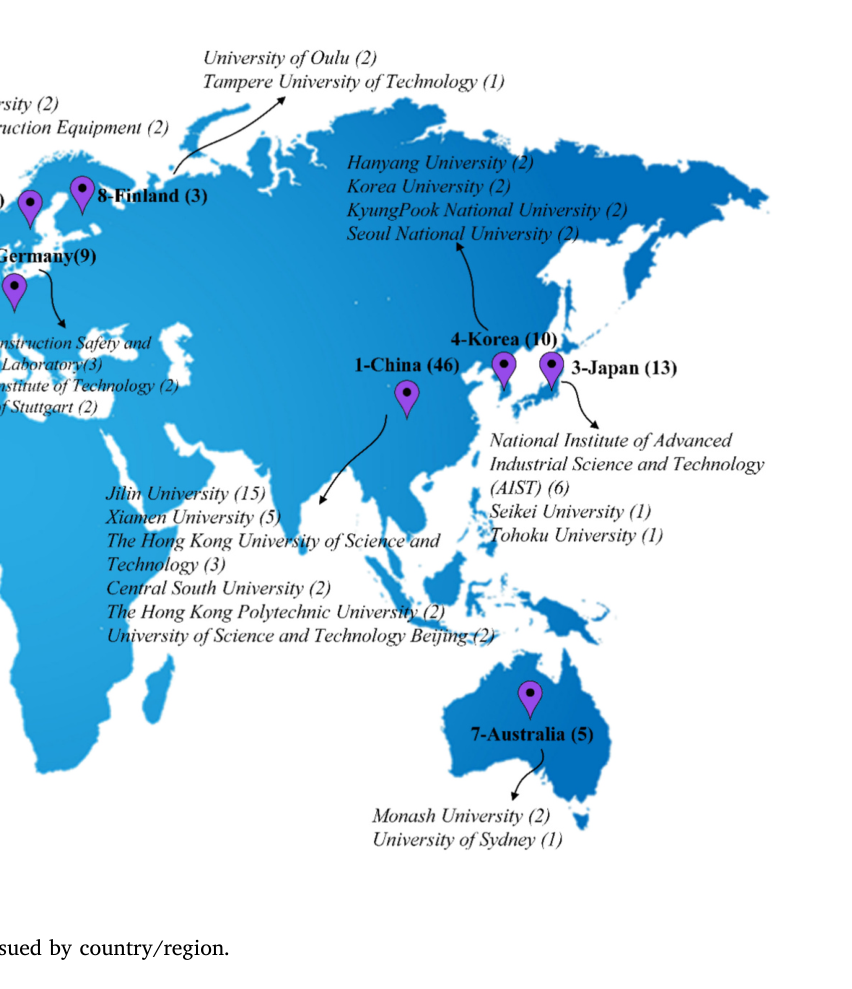
원문 Figure 6 · PDF p.8 — Fig. 6. Publications issued by country/region.
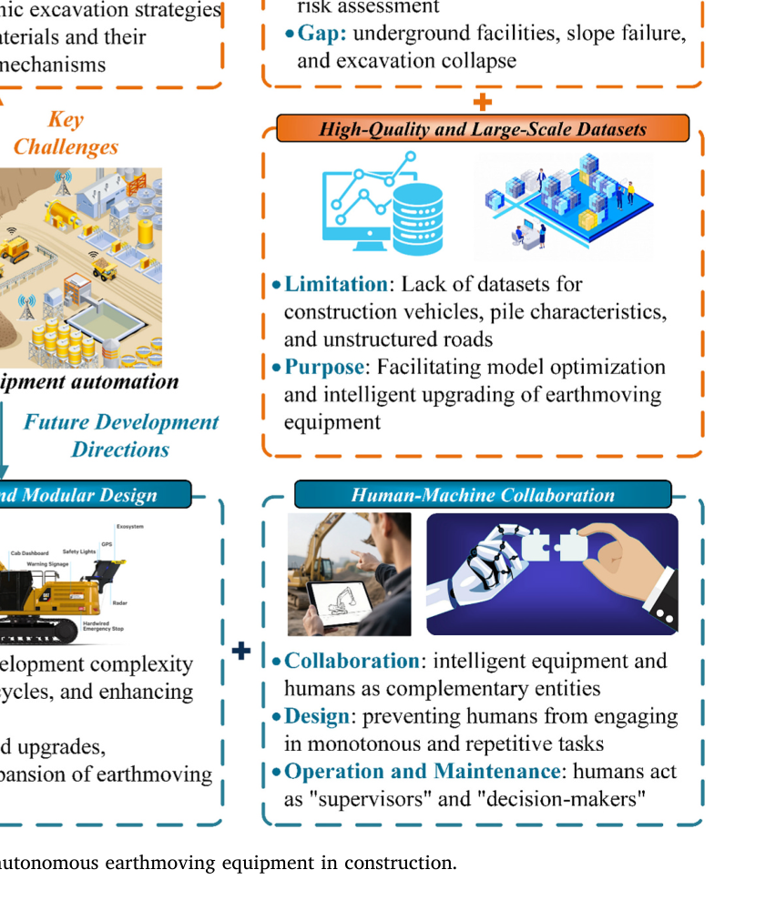
원문 Figure 13 · PDF p.22 — Fig. 13. Key challenges and future directions for autonomous earthmoving equipment in construction.
5.한계 및 향후 연구
현재 한계
전자 아키텍처, 컴퓨팅 플랫폼, 사이버보안, 고정밀 지도·측위, 표준·규정을 의도적으로 제외해 완전 시스템 관점이 여전히 부분적이다.
문헌별 장비, 재료, 환경, 지표가 달라 핵심 방법의 직접 정량 비교가 제한된다.
영어 저널·학회 중심 검색으로 다른 언어와 지역의 산업개발을 과소대표할 수 있다.
빠르게 변하는 상용화 사례를 공개 문헌과 산업 보고서만으로 수집해 최신 현장배치를 누락할 수 있다.
리뷰가 인용한 상용 성능치는 독립적으로 재실험한 값이 아니라 각 출처의 보고에 의존한다.
완전 자율보다 반자동·보조제어 연구가 많아 전체 사이클 장애·복구·장기운영에 대한 근거가 부족하다.
향후 연구
디지털 트윈으로 토질·파일형상·장비동역학을 다양화하고 실세계와 합성 데이터를 함께 학습한다.
엣지에서 시간·좌표 정렬과 차원축소를 수행하고 클라우드에서 장기 데이터 분석과 모델 갱신을 수행한다.
IIoT, CAN, OPC UA와 OPERA형 개방 플랫폼으로 제조사 간 제어·데이터·시뮬레이터 인터페이스를 표준화한다.
사람·환경·공사 위험을 공통 모듈로 묶고 광산·터널·고사면 특화 위험모듈을 교체 가능하게 만든다.
혼합·습윤 토양과 불규칙 암석에 맞는 굴착전략을 디지털 트윈과 숙련자 시범으로 지속 갱신한다.
반복·위험 작업은 장비가 수행하고 사람은 전략, 이상상황, 비상결정을 맡는 원격 감독 체계를 발전시킨다.
6.한마디로 정리
핵심 방법은?
596편 검색에서 142편을 PRISMA로 선별하고 CiteSpace 계량서지와 체계 리뷰를 결합해 6단계 적재 사이클을 네 핵심기술 축으로 분석했다.
핵심 결과는?
연구량과 하위기술은 빠르게 성장했지만 이종센서, 재료별 전략, 공용 안전체계, 전용 데이터셋과 전체 작업흐름 최적화가 완전 자율화의 공백으로 남았다.
한계는?
기반 전자·측위·보안·규정은 범위 밖이며, 이질적인 문헌 조건과 영어·공개자료 편향 때문에 정량 순위와 상용 현황을 완전하게 비교하기 어렵다.
우리 연구에는 단주기 적재를 여섯 단계로 나누고 각 단계가 어떤 인식·계획·안전 정보를 필요로 하는지 연결한 프레임이 직접 유용하다. 파일 인식 결과가 굴착점과 궤적에 전달되고, 버킷 적재량과 트럭 분포가 다음 하역·복귀 계획에 환류되는 데이터 계약을 정의하면 개별 모듈 연구를 전체 폐루프로 평가할 수 있다. 대시보드에서도 논문을 단일 카테고리에 넣기보다 이 여섯 단계의 어느 입력·출력을 담당하는지 표시할 필요가 있다.
데이터-물리 하이브리드는 토양 접촉처럼 정확한 모델도 순수 데이터도 충분하지 않은 문제에 적합하다. 물리 모델은 실행 가능한 힘·기구학 범위를 제공하고 학습 모델은 잔차와 재료변화를 보정할 수 있다. 다만 리뷰가 강조하듯 현장용 데이터셋, 안전 프레임워크와 표준 인터페이스가 함께 없으면 높은 단일 모델 정확도는 실차 자율운영으로 이어지지 않는다.
환경인식-굴착점-궤적-적재량-하역점의 오류 전파를 포함한 전체 사이클 평가셋을 구축해야 한다.
센서융합 연구에서는 평균 정확도뿐 아니라 시간동기, 좌표보정, 지연과 센서 고장 시 강등모드를 기록해야 한다.
토질 물리모델의 잔차를 학습하고 불확실도를 계획 제약으로 넘기는 데이터-물리 구조를 우선 검토할 수 있다.
디지털 트윈은 시각화에 그치지 않고 실제 장비 상태·지형 변화·생산성과 양방향 동기화돼야 한다.
OPERA와 유사한 공통 제어·데이터 인터페이스는 여러 제조사의 굴착기·운반차 협업 실증에 중요하다.
사람 감독의 개입 조건과 인수인계 시간을 성능·안전 지표로 포함해야 한다.
7.전체 그림·표
본문 핵심 위치에 배치하지 않은 원문 Figure와 Table을 원문 페이지 순서로 수록한다.
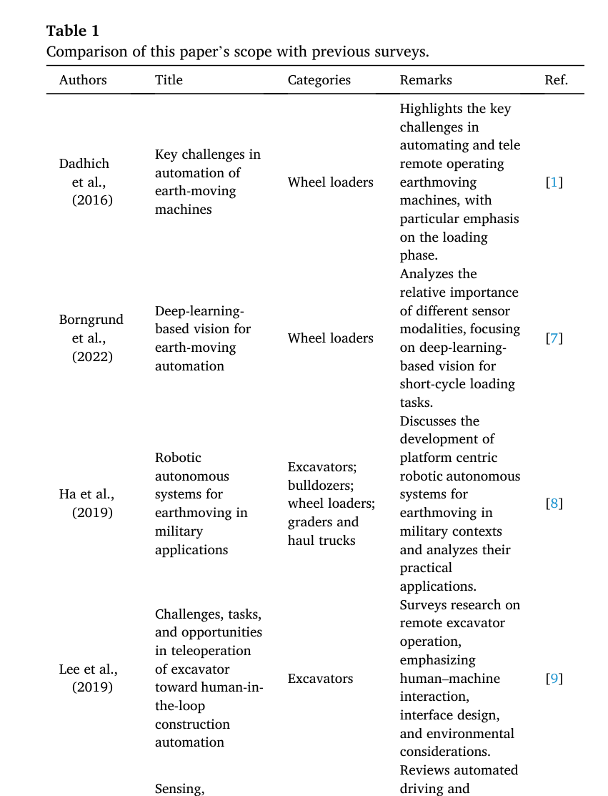
원문 Table 1 · PDF p.2 — Table 1 Comparison of this paper’s scope with previous surveys.
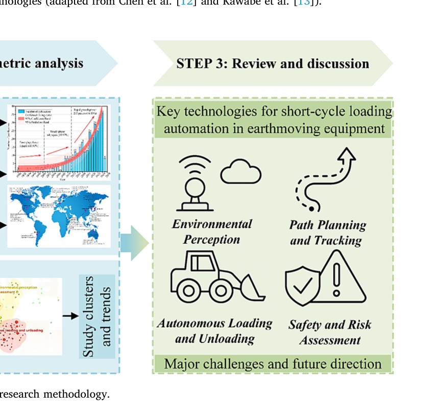
원문 Figure 3 · PDF p.4 — Fig. 3. Overview of research methodology.
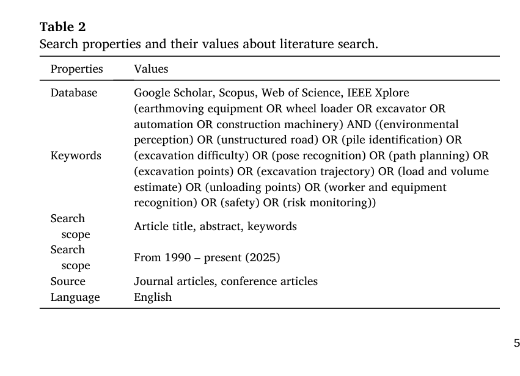
원문 Table 2 · PDF p.5 — Table 2 Search properties and their values about literature search.